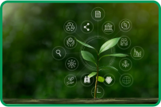

Ultimas Noticias
Brasil é o 5º país que mais gera lixo eletrônico, mas apenas 3% é descartado corretamente; saiba como fazer
Para se desfazer de um eletroeletrônico quebrado, a orientação é procurar o Ponto de Entrega Voluntária (PEV) mais próximo.

Tecnologia verde: um caminho rumo a sustentabilidade!
Práticas de sustentabilidade podem otimizar o ciclo de vida dos produtos de forma responsável, além de gerar menor impacto ambiental.

Projeto escolar brasileiro sobre lixo eletrônico vence o 3º Prêmio Ibero-Americano de Inovação Educacional.
A Escola Municipal Ernesto Milani, de Quatro Barras, no estado do Paraná, ganhou o primeiro lugar. Também foram reconhecidos projetos de destaque da Argentina, do Chile e do Peru!